| Student | Durgesh Kumar |
| Roll number | 23CE36005 |
| Span | L = 33 m |
| Instructor | Prof. Nirjhar Dhang |
| Submission | October 2026 |
A 33 m post-tensioned PSC I-girder bridge (3 lanes, footpaths, 6 girders at 2.6 m, 1.80 m + 0.22 m deck, M45/M35) was designed to IRC:6 and IRC:112 with two-stage post-tensioning (4 × 11T15; Pe = 6538 kN, total loss 23.9 %; all stress, ULS, shear and deflection checks satisfied). A digital twin of the as-built bridge gives the healthy baseline (f1 = 3.44 Hz bending, 3.51 Hz torsion; -0.17 %/°C), the inspection, NDT and monitoring schemes, and 2380 synthetic campaigns for six deterioration mechanisms. On these data, vibration features alone classify the mechanism with macro-F1 0.41; fusing visual inspection, NDT, monitoring and vibration gives 0.91. Prestress loss is estimated from levelling and embedded gauges with an error of 3.6 % of Pe. A rule-based maintenance scheme turns the fused evidence into auditable decisions; over a simulated 30-year life the proactive owner keeps every mechanism below severity 0.6 at a total of 32 relative units, against 51 (including the unrepaired damage) for a reactive owner, who never sees the grout-void prestress loss. All data are synthetic: the ML figures are digital-twin performance.
This report follows one bridge through its life: a simply supported, post-tensioned PSC I-girder span of L = 33 m (span chosen from 30 / 33 / 36 m), with three traffic lanes, footpaths and crash barriers on both sides. The chain of the problem statement is followed literally: design → prestressing → healthy baseline → visual inspection → NDT → structural and vibration monitoring → synthetic data → features → AI/ML → maintenance decision. One digital twin of the bridge (a grillage with mass, bearings and damage hooks) produces all the synthetic measurements, so every later chapter uses the same structure designed in Chapters 2–3.
The span is treated as span S1 (abutment A1 – pier P1) of a viaduct of identical simply supported spans, so that the inspection scheme can include a pier cap and a pier; piers, abutments and foundations are not designed here.
| Strip | Width (m) | Justification |
|---|---|---|
| Railing + kerb | 2 × 0.25 | pedestrian railing on a kerb |
| Footpath | 2 × 1.50 | IRC:5 minimum clear footpath width |
| Crash barrier | 2 × 0.45 | rigid New-Jersey barrier separating footpath and carriageway |
| Carriageway | 11.00 | IRC:6 Table 6: 9.6 ≤ 11.0 < 13.1 m gives exactly three design lanes |
| Overall deck | 15.40 |
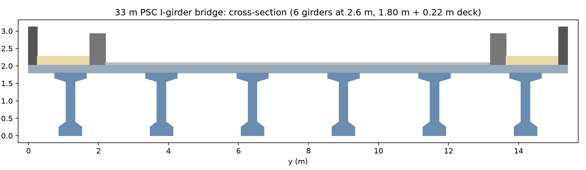
Girders. Six girders at 2.6 m with 1.20 m cantilevers. Compared with five girders at about 3.1 m, six lighter girders (precast area 0.710 m², about 61 t each) are easier to erect and allow a shallower section. Depth 1.80 m precast + 0.22 m deck = 2.02 m (L/D = 16.3). Web 0.25 m (one 12-strand duct + 75 mm cover each side), bottom flange 0.65 × 0.25 m to house the cables, end blocks widened to 0.65 m over 1.5 m for the anchorages. Concrete M45 girders and M35 deck (IRC:112 minimum grades for severe exposure are M40 PSC and M30 RCC); Ecm = 34.3 / 32.3 GPa (IRC:112 Table 6.5). Cross girders at both ends (0.50 × 1.50 m, also the jacking beams for bearing replacement) and one at mid-span (0.30 × 1.40 m).
| Section | A (m²) | yb (m) | I (m⁴) | Zb (m³) | Zt (m³) |
|---|---|---|---|---|---|
| precast mid | 0.7100 | 0.912 | 0.2761 | 0.3029 | 0.3108 |
| precast end block | 1.2200 | 0.933 | 0.3466 | 0.3716 | 0.3997 |
| composite mid, interior | 1.2486 | 1.342 | 0.5835 | 0.4347 | 0.8610 |
| composite mid, outer | 1.2279 | 1.333 | 0.5767 | 0.4327 | 0.8390 |
Loads (IRC:6-2017). Self-weight (25 kN/m³); crash barriers 8.5 kN/m, railings 2.0 kN/m, footpath finish 3.0 kPa, wearing coat 2.0 kPa (65 mm bituminous plus one overlay). Footpath live load by cl. 206.1 for L = 33 m: 2.80 kPa. Vehicles: Class A trains, Class 70R wheeled and tracked, combined per Table 6A for three lanes (one 70R + one Class A, or three Class A with the 10 % reduction of cl. 205), with the IRC kerb and vehicle-to-vehicle clearances; impact 4.5/(6 + L) = 0.115 for Class A and wheeled 70R, 10 % for tracked 70R.
Model. Stage 1 (girder + wet slab + cross girders) on the precast girder alone as a simply supported beam; composite loads on a grillage (6 longitudinal composite members, transverse slab strips at 0.75 m, cross girders as T-beams, Hambly's torsion split). Influence surfaces are obtained with one solve per response (Maxwell–Betti), and the vehicles are placed by an exhaustive longitudinal search plus dynamic programming across the carriageway.
Checks of the tools. The grillage reproduces PL/4, PL³/48EI and wL²/8 for a single line and static equilibrium for the full deck; the vehicle search reproduces its own optimum by a direct load-vector solve. For the governing outer-girder case (70R wheeled + Class A, eccentricity -1.57 m) the grillage gives a share of 0.251 to G1 against 0.253 by Courbon's method (L/B = 2.14, stiff mid-span cross girder): the two methods agree.
| Girder | DL stage 1 | SIDL | Wearing coat | Footpath LL | Vehicle LL (incl. impact) | SLS rare | ULS |
|---|---|---|---|---|---|---|---|
| G1 | 4,403 | 653 | 503 | 261 | 2,735 | 8,655 | 12,199 |
| G2 | 4,580 | 739 | 486 | 244 | 2,424 | 8,569 | 12,032 |
| G3 | 4,580 | 650 | 509 | 174 | 2,116 | 8,130 | 11,385 |
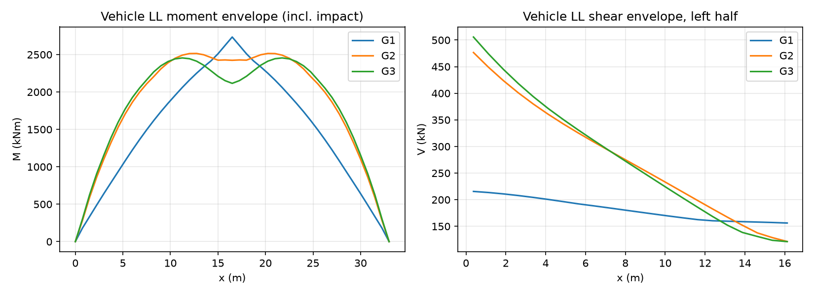
The outer girder G1 governs flexure (live-load deflection 13.1 mm < L/800 = 41.2 mm); interior girders govern shear (vehicle shear 506 kN at the support element). All six girders are given the same design.
Two-stage stressing. With all strands stressed on the bare girder the transfer compression at the soffit exceeds 0.48 fck(t) for concrete of about 35 MPa at 14 days. Two cables are therefore stressed at a girder age of 14 days and two after the deck has hardened (day 75), when they act on the deeper composite section. The strand count was chosen by a sweep: 3 × 12T15 and 4 × 10T15 crack under the frequent combination (with the characteristic prestress 0.9 Pm), 4 × 12T15 exceeds 0.36 fck under quasi-permanent load near the supports; 4 × 11T15 (44 strands, 15.2 mm, fpk 1860 MPa) satisfies every check.
| Cable | Strands | Stage | Anchor height (m) | Mid-span height (m) | Mid-span lateral (m) |
|---|---|---|---|---|---|
| C1 | 11T15 | 1 | 0.40 | 0.125 | -0.19 |
| C2 | 11T15 | 1 | 0.75 | 0.125 | +0.19 |
| C3 | 11T15 | 2 | 1.10 | 0.125 | +0.00 |
| C4 | 11T15 | 2 | 1.45 | 0.315 | +0.00 |
The geometry was checked along the whole girder: minimum duct centre distance 190 mm (≥ 2 × OD = 190 mm), minimum cover 78 mm (≥ 75 mm), anchorage spacing 0.35 m with 0.35 m top edge distance, minimum plan radius 5.5 m (to be confirmed with the PT supplier).
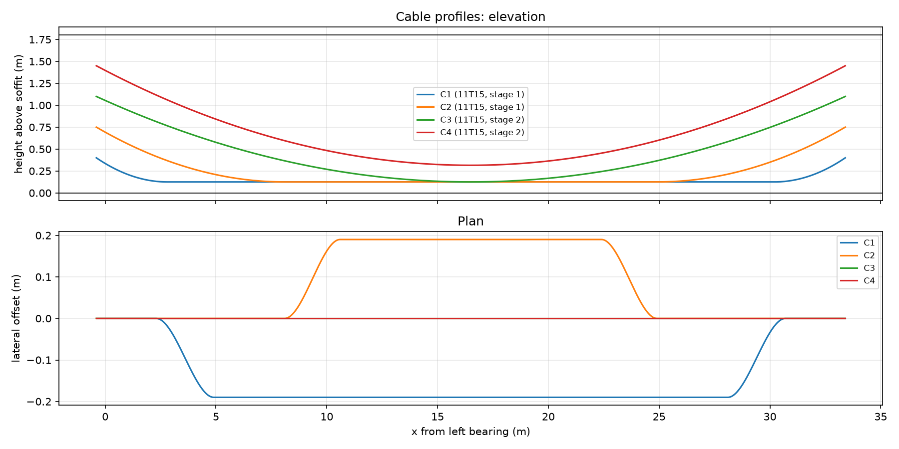
| Stage of loss (mid-span, G1) | Stress (MPa) | Note |
|---|---|---|
| Jacking stress (0.75 fpk) | 1,395 | – |
| After friction (μ = 0.17, k = 0.002/m) and 6 mm wedge slip, stage-1 cables | 1,286 | both ends stressed |
| Elastic shortening, stage-1 cables stressed in sequence | 12.2 | (n−1)/2n rule |
| Elastic shortening of stage-1 cables when stage 2 is stressed | 70.9 | cost of two-stage stressing |
| Creep + shrinkage + relaxation, stage 1 | 213.0 | φ = 1.89 |
| Creep + shrinkage + relaxation, stage 2 | 193.3 | φ = 1.37 |
| Final stress stage 1 / stage 2 | 990 / 1133 |
Stresses. Construction stages (transfer, deck casting, stage-2 stressing) and service at opening and after 100 years were checked with the characteristic prestress rsup = 1.1 / rinf = 0.9 Pm, temperature gradients (IRC:6 cl. 215.3; mid-span soffit +1.76 / -2.46 MPa) and differential shrinkage (deck 334 με, girder after deck casting 229 με, age-adjusted modulus). Severe exposure, bonded PT: decompression under the quasi-permanent combination and wk ≤ 0.2 mm under the frequent combination (the section stays uncracked, wk = 0).
| Stage | Fibre | Check | Worst value (MPa) | Limit | Result | Where |
|---|---|---|---|---|---|---|
| transfer | girder_bottom | compression <= 0.48 fck(t) | 13.13 | 19.00 | OK | G1, x = 3.00 |
| transfer | girder_bottom | tension >= -fctm(t) | 6.62 | -2.95 | OK | G1, x = 0.00 |
| transfer | girder_top | compression <= 0.48 fck(t) | 3.68 | 19.00 | OK | G1, x = 16.50 |
| transfer | girder_top | tension >= -fctm(t) | -1.44 | -2.95 | OK | G1, x = 1.50 |
| deck_cast | girder_bottom | compression <= 0.48 fck(t) | 9.75 | 21.60 | OK | G1, x = 2.25 |
| deck_cast | girder_bottom | tension >= -fctm(t) | -1.93 | -3.45 | OK | G3, x = 16.50 |
| deck_cast | girder_top | compression <= 0.48 fck(t) | 11.04 | 21.60 | OK | G3, x = 16.50 |
| deck_cast | girder_top | tension >= -fctm(t) | -0.85 | -3.45 | OK | G2, x = 0.00 |
| stage2 | girder_bottom | compression <= 0.48 fck(t) | 16.85 | 21.60 | OK | G1, x = 5.25 |
| stage2 | girder_bottom | tension >= -fctm(t) | 8.02 | -3.61 | OK | G1, x = 0.00 |
| stage2 | girder_top | compression <= 0.48 fck(t) | 10.78 | 21.60 | OK | G3, x = 16.50 |
| stage2 | girder_top | tension >= -fctm(t) | 1.29 | -3.61 | OK | G2, x = 0.75 |
| open/rare | girder_bottom | compression <= 0.48 fck | 14.80 | 21.60 | OK | G1, x = 2.25 |
| open/rare | girder_bottom | [legacy] no tension under rare | -1.76 | 0.00 | not required (IRC:112) | G1, x = 16.50 |
| open/rare | girder_top | compression <= 0.48 fck | 14.50 | 21.60 | OK | G2, x = 16.50 |
| open/rare | deck_top | compression <= 0.48 fck | 5.67 | 16.80 | OK | G1, x = 16.50 |
| open/frequent | girder_bottom | uncracked: tension >= -fctm | 0.12 | -3.28 | OK | G2, x = 16.50 |
| open/frequent | girder_top | uncracked: tension >= -fctm | 0.71 | -3.28 | OK | G2, x = 0.00 |
| open/frequent | deck_top | uncracked: tension >= -fctm | 0.31 | -2.77 | OK | G3, x = 16.50 |
| open/QP | girder_bottom | compression <= 0.36 fck | 16.07 | 16.20 | OK | G3, x = 2.25 |
| open/QP | girder_bottom | decompression at soffit | 10.38 | 0.00 | OK | G3, x = 2.25 |
| open/QP | girder_top | compression <= 0.36 fck | 12.31 | 16.20 | OK | G2, x = 16.50 |
| open/QP | deck_top | compression <= 0.36 fck | 4.47 | 12.60 | OK | G1, x = 0.00 |
| final/rare | girder_bottom | compression <= 0.48 fck | 12.66 | 21.60 | OK | G1, x = 2.25 |
| final/rare | girder_bottom | [legacy] no tension under rare | -4.32 | 0.00 | not required (IRC:112) | G1, x = 16.50 |
| final/rare | girder_top | compression <= 0.48 fck | 15.37 | 21.60 | OK | G2, x = 16.50 |
| final/rare | deck_top | compression <= 0.48 fck | 5.76 | 16.80 | OK | G1, x = 16.50 |
| final/frequent | girder_bottom | uncracked: tension >= -fctm | -2.39 | -3.28 | OK | G2, x = 16.50 |
| final/frequent | girder_top | uncracked: tension >= -fctm | 1.27 | -3.28 | OK | G2, x = 0.00 |
| final/frequent | deck_top | uncracked: tension >= -fctm | 0.23 | -2.77 | OK | G2, x = 0.00 |
| final/QP | girder_bottom | compression <= 0.36 fck | 13.92 | 16.20 | OK | G3, x = 2.25 |
| final/QP | girder_bottom | decompression at soffit | 8.55 | 0.00 | OK | G3, x = 2.25 |
| final/QP | girder_top | compression <= 0.36 fck | 13.18 | 16.20 | OK | G2, x = 16.50 |
| final/QP | deck_top | compression <= 0.36 fck | 4.02 | 12.60 | OK | G1, x = 0.00 |
ULS. Strain-compatibility fibre analysis (parabola–rectangle concrete, bilinear strand with its effective prestrain, untensioned bars ignored): MEd/MRd = 0.81 (G1, 12199 / 15031 kNm), neutral axis 291 mm below the deck top, all tendons yielded. A hand check with the parabola–rectangle block agrees within 1 %. Shear (IRC:112 cl. 10.3, interior girder): VEd = 1690 kN at the support, of which the cable inclination carries 747 kN; links were designed by the truss model alone (concrete term ignored): Asw/s = 693 mm²/m near the support (e.g. 2L-12 @ 300) reducing to the minimum 241 mm²/m at mid-span; VRd,max is not governing. Deck–girder interface steel up to 1831 mm²/m near the supports. Deflection: camber 14.6 mm at transfer, 3.6 mm upwards in the long term; live load 15.3 mm (beam line) against L/800 = 41.2 mm.
The as-built twin uses the dynamic modulus Ed = (Ec + 19)/1.25 GPa (BS 8110-2; 1.24 Ecm), the superimposed masses (27.1 t/m in total, equal to the dead loads within 1 %) and laminated elastomeric bearings 400 × 400 mm (shape factor 8.3, kv = 1149 MN/m, kh = 3333 kN/m) as springs. Damping 1.5 % in every mode.
| Mode | f (Hz) | Shape |
|---|---|---|
| 1 | 3.442 | bending 1 |
| 2 | 3.510 | torsion 1 |
| 3 | 7.958 | transverse 1 |
| 4 | 12.967 | torsion 2 |
| 5 | 13.018 | bending 2 |
| 6 | 14.088 | transverse 2 |
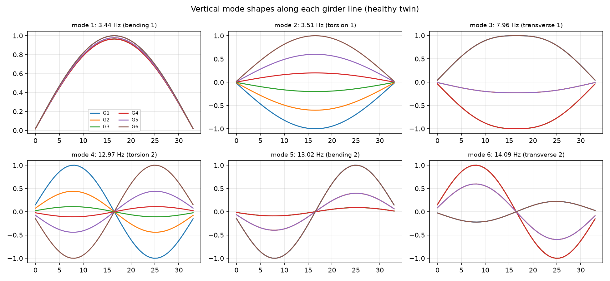
Vibration measurement. Eight vertical accelerometers (L/4, L/2, 3L/4 of both outer girders and mid-span of G3 and G4; the outer pairs separate bending from torsion), 100 Hz sampling (Nyquist 50 Hz ≫ the 25 Hz band of interest), 10-minute records (about 2000 cycles of f1), excitation by traffic and ambient wind / micro-tremor. Processing: detrend → 0.5–30 Hz band-pass → Welch PSD → peak picking; frequency domain decomposition (FDD) of the cross-spectral matrix for the mode shapes, compared with the model by MAC.
| Mode | Model (Hz) | Identified from 3 simulated records (Hz) | MAC |
|---|---|---|---|
| bending 1 | 3.442 | 3.458 ± 0.006 | 0.93 |
| torsion 1 | 3.510 | 3.510 ± 0.022 | 0.89 |
| transverse 1 | 7.958 | 7.944 ± 0.028 | 1.00 |
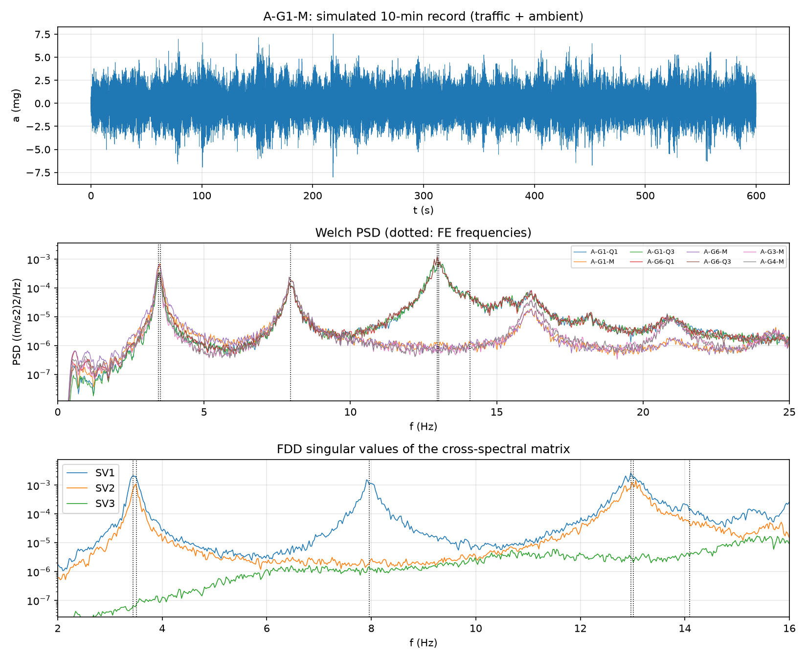
The first bending and first torsion modes are only 2 % apart, so the identified f1 carries a small bias and the 13 Hz pair cannot be separated at all; the baseline for damage detection must therefore be the identified values, not the model. Sensitivities: temperature -0.170 %/°C on f1 (a 35 °C seasonal swing moves f1 by about 6 %); fully composite barriers +0.7 %; seized bearings +8.5 % – a seized bearing makes the bridge look stiffer.
Static baseline. Load test with two 400 kN trucks (IRC:SP:51 approach), mid-span values G1–G6:
| Test | Deflection (mm) | Soffit strain (με) |
|---|---|---|
| LT-1 eccentric (lanes 1-2) | 8.37 / 7.51 / 6.25 / 4.51 / 2.56 / 0.60 | 119 / 102 / 84 / 64 / 37 / 6 |
| LT-2 central | 4.01 / 5.08 / 5.81 / 5.81 / 5.08 / 4.01 | 56 / 72 / 78 / 78 / 72 / 56 |
Long-term reference curves (G3 mid-span, creep superposition of every stress increment and the loss history): embedded-gauge strain / mid-span deflection 1 y: 807 με / -3.9 mm, 10 y: 926 με / -1.0 mm, 30 y: 939 με / -0.6 mm, 100 y: 944 με / -0.5 mm. Later readings are compared with these curves.
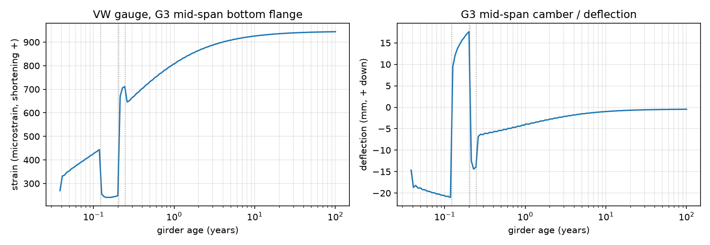
31 sensors / items: 8 accelerometers; 12 embedded vibrating-wire gauges with thermistors (bottom and top flange of G1, G3, G6 at L/4 and L/2, read every 15 min from casting); hydrostatic levelling at mid-span of G1, G3, G4, G6; bearing-movement transducers at the free bearings of G1 and G6 (expected 0.386 mm/°C); thermocouples through the depth; a weather station; and a load test at handing over and every 10 years.
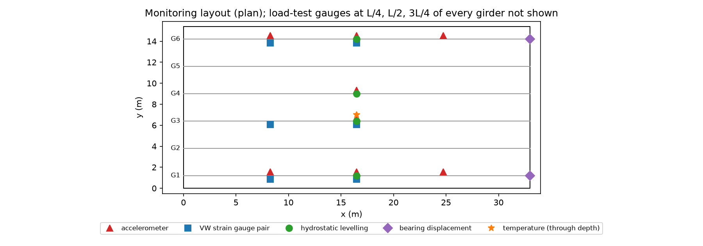
| NDT method | Healthy reference (mean ± sd) | Note |
|---|---|---|
| rebound_number | girder (M45): 41.0 ± 2.5; deck (M35): 37.0 ± 2.5 | IS 516 (Part 5/Sec 4):2020; horizontal impact on the web, vertical upward on the soffit |
| upv_km_s | girder (M45): 4.6 ± 0.12; deck (M35): 4.45 ± 0.12 | IS 516 (Part 5/Sec 1):2018, direct transmission through the web where possible |
| cover_mm | girder links (spec 50): 55.0 ± 4.0; ducts (spec 75): 80.0 ± 5.0; deck (spec 50): 54.0 ± 5.0 | cover meter; tolerance +10/-0 mm |
| half_cell_mV_CSE | all: -120.0 ± 40.0 | ASTM C876: > -200 mV: < 10 % probability of active corrosion |
| resistivity_kOhm_cm | girder: 35.0 ± 8.0; deck: 25.0 ± 6.0 | Wenner probe; > 20 kOhm cm: low corrosion rate |
| carbonation_depth_mm | model: x = k sqrt(t), k = 1.5 mm/sqrt(year) for M45, 2.0 for M35 | phenolphthalein on cores / drilled holes |
| chloride_at_steel_pct_cement | all: 0.05 ± 0.02 | threshold ~0.3-0.4 % by mass of cement |
| duct_grouting | all: fully grouted | GPR / ultrasonic tomography over the ducts, impact-echo at anchorages; voids are a construction defect to rule out at handing over |
Hierarchy Bridge → Span → Component → Location → Observation: bridge BR-33, span S1, 12 components,
268 coded locations (e.g. G3/L/2/bottom flange,
BRG-P1-G6, EJ-A1/carriageway). Each observation type has measured inputs (crack width and orientation,
spall area and exposed steel, bearing shear strain, …) and a rule that gives a condition state CS1 (good) to CS4 (severe).
PSC girders are rated more strictly than RCC because they were designed uncracked (a 0.1 mm flexural crack is CS3; any
crack along a duct is at least CS3). A component takes its worst observation; the bridge health index
HI = 100 Σ w (4 − CS)/3 / Σ w weights components by structural importance, and a CS4 on girders, bearings, pier or
abutment overrides the index.
| Component | Weight | Locations | Observation types |
|---|---|---|---|
| PSC girders | 1.0 | 102 | crack, spalling, corrosion staining, leakage / efflorescence… |
| Deck slab | 0.8 | 70 | crack, spalling, corrosion staining, leakage / efflorescence… |
| Cross girders | 0.6 | 15 | crack, spalling, corrosion staining, leakage / efflorescence… |
| Bearings | 0.7 | 12 | bearing shear deformation, bearing bulging / splitting, bearing displacement / walking, bearing seized / debris… |
| Expansion joints | 0.5 | 6 | joint debris, joint seal torn / leaking, joint anchorage damage |
| Drainage | 0.3 | 8 | drain blocked, drain damaged / missing, discharge onto structure |
| Crash barriers | 0.4 | 10 | crack, spalling, impact damage, exposed steel |
| Footpaths | 0.2 | 10 | surface deterioration, crack, spalling |
| Railings | 0.2 | 10 | impact damage, corrosion staining, missing members |
| Wearing coat | 0.3 | 15 | wearing coat cracking, potholes / ravelling, rutting |
| Abutment A1 | 0.8 | 5 | crack, spalling, leakage / efflorescence, corrosion staining… |
| Pier P1 | 0.9 | 5 | crack, spalling, leakage / efflorescence, corrosion staining… |
| Inspection | Interval | Scope |
|---|---|---|
| superficial (patrol) | monthly | drive-over and walk-along: joints, drains, barriers, wearing coat, visible damage |
| routine | twice a year (pre- and post-monsoon) | all components from deck and ground with binoculars; bearings and joints close up; app records |
| principal (detailed) | every 3 years and at handing over | hands-on, under-bridge unit; every location of the hierarchy; crack mapping; baseline NDT grid |
| special | after flood, earthquake, vehicle impact, fire, overload, or a monitoring alarm | targeted: NDT, load test, structural assessment |
Digital inspection app (inspection_app/index.html, one offline file): clickable plan of the span (underside
and deck-top views) coloured by the worst condition state, defect-specific inputs with the condition state computed live
(override only with a stated reason), photos, health index, recommended NDT, CSV/JSON export. Its rules are the same as the
Python rules (a test compares both on more than 500 cases).
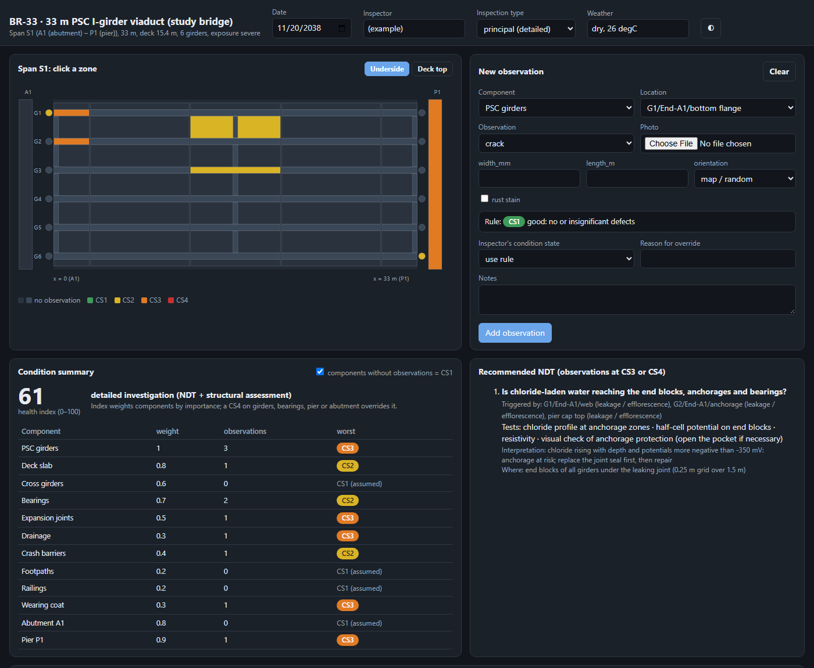
Each test answers an engineering question raised by an observed defect (defect → question → NDT → measurement → interpretation). The baseline grid has 81 test points (soffit and web of every girder at five zones, deck soffit bays) where rebound, UPV, cover, half-cell potential and resistivity are measured at handing over and at principal inspections; chloride profiles are taken at the end blocks.
| Observed defect | Engineering question | NDT | Interpretation |
|---|---|---|---|
| longitudinal crack / rust staining along a duct line (girder bottom flange) | Are the prestressing strands corroding? Is the duct fully grouted? | half-cell potential grid over the duct line; concrete resistivity (Wenner); cover meter; GPR / ultrasonic tomography over the duct; chloride profile from drilled dust; if indicated: endoscope through a drilled hole into the duct | potential < -350 mV CSE with resistivity < 10 kOhm cm: active corrosion likely; chloride at duct depth > 0.2 % of cement: depassivation of strand likely; tomography anomaly: grout void -> re-grouting (vacuum injection) |
| transverse flexural cracks at the soffit near mid-span | Has the girder lost prestress (designed uncracked)? | crack width / length mapping and tell-tales or crack gauges; UPV across the crack (crack depth); VW strain and levelling trend vs. reference curve; load test (deflection, strain, crack opening) | cracks opening under traffic and a strain / camber trend away from the reference curve indicate prestress loss; compare decompression load in the load test with design |
| diagonal web cracks near the supports | Is the shear capacity or the end-block reinforcement adequate? | crack mapping, width monitoring; UPV (direct, through the web); cover meter for link spacing; load test with trucks near the support | cracks > 0.2 mm or growing: detailed shear assessment with as-built links |
| honeycombing / surface deterioration / doubtful concrete | Is the in-situ concrete quality and strength adequate? | rebound hammer (IS 516 Part 5/Sec 4); UPV (IS 516 Part 5/Sec 1); combined rebound + UPV (SonReb) calibrated on cores (IS 516 Part 4) | UPV well below the healthy reference (e.g. < 3.75 km/s, 'doubtful' in IS 516-5-1) or rebound below reference - 2 sd: take cores; estimate strength from the calibrated curve |
| spalling / delamination / exposed rebar on the deck soffit or cross girders | How far does corrosion-induced delamination extend? What is causing it? | hammer sounding; half-cell potential; cover meter; carbonation depth (phenolphthalein); chloride profile | carbonation depth >= cover or chloride > 0.4 % of cement at rebar: corrosion initiated; repair extent = hollow-sounding area + 0.3 m |
| leakage / efflorescence at girder ends below an expansion joint | Is chloride-laden water reaching the end blocks, anchorages and bearings? | chloride profile at anchorage zones; half-cell potential on end blocks; resistivity; visual check of anchorage protection (open the pocket if necessary) | chloride rising with depth and potentials more negative than -350 mV: anchorage at risk; replace the joint seal first, then repair |
| bursting / splitting cracks in the anchorage zone | Is the anchorage-zone reinforcement working? Is the anchorage itself sound? | crack mapping; UPV; GPR for bursting steel; impact-echo on the anchorage pocket | cracks > 0.2 mm or voids behind the plate: specialist assessment of the anchorage |
| bearing shear deformation, bulging, splitting, walking or seizure | Is the bearing accommodating movement and rotation as designed? | measure shear deformation and bulging with a gauge; bearing-displacement transducer: movement vs. temperature; Shore A hardness of the elastomer; level survey of the bearing seat | shear strain > 0.7, splits or exposed plates, or a movement / temperature slope well below alpha L = 0.386 mm/degC: replace the bearing (jacking under the end cross girder) |
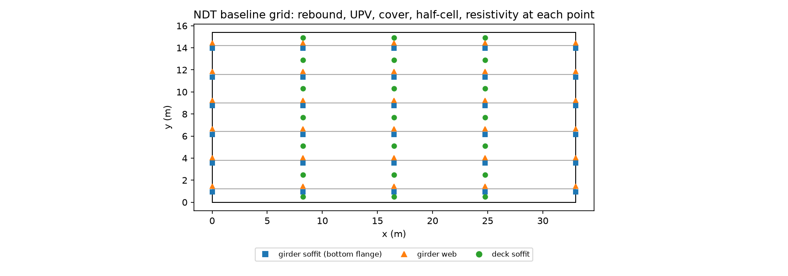
Six mechanisms plus the healthy state. Each has a severity s ∈ [0, 1] mapped to a physical parameter of the twin; the ranges below are my assumptions, chosen from “just detectable” to “severe but standing”.
| Mechanism | Model and range |
|---|---|
| prestress_loss | loss of 3-30 % of the effective force of 1 girder (30 % of cases: 2 adjacent girders); strand corrosion from grout voids / chloride. Cracks only when the soffit decompresses under frequent load (margin ~3 MPa), then EI of the mid zone drops (to 0.5 at most). |
| girder_cracking | flexural cracking after an overload: EI of a 9-15 m zone around mid-span of 1 girder x(1 - 0.45 s), i.e. down to 0.55 (partly cracked PSC); residual crack width 0.05-0.55 mm. |
| concrete_deterioration | distributed loss of concrete quality (e.g. poor compaction, ASR-type damage) in 1-3 adjacent girders: E x(1 - 0.30 s); UPV and rebound fall locally. |
| bearing_seized | 1-6 free-end (P1) bearings restrained by debris / corrosion of the guides: horizontal stiffness 3e4-1e6 kN/m (log scale) instead of 3.3e3 (elastomer shear). |
| bearing_degraded | 1-2 elastomeric bearings split / aged: vertical stiffness x(1 - 0.85 s). |
| chloride_corrosion | expansion joint at A1 or P1 leaking chloride-laden water: corrosion activity up to s in the end zones of the girders and deck below it; for s > 0.6 spalling and an end-zone EI loss of up to 20 %. |
Prestress loss is applied as the reversed equivalent loads of the tendon (nodal couples ΔP·e on the girder) on the grillage: the deck shares the effect, the moment sum at mid-span equals ΔP·e (checked), and the girder only cracks under traffic when the loss consumes the ~3 MPa frequent-load margin to cracking found in Chapter 3. With HDPE ducts the strands are electrically insulated: strand corrosion from grout voids leaves no half-cell signal; only chloride-driven loss (40 % of cases) shows on the surrounding reinforcement.
A campaign is one visit of the bridge in one condition and environment (age 1–30 y, season, deck temperature, traffic). For each campaign the twin produces a 300 s, 8-channel acceleration record from which f1, f2, f3 are identified by spatial modal filtering, the load-test deflections and strains of all girders, gauge-strain and camber residuals relative to the reference curves (with a creep-model error common to the bridge), bearing movement per °C, the 81 NDT readings (with per-survey calibration errors, wet-season and carbonation effects) and the inspector's observations (imperfect detection, plus unrelated defects that appear on any bridge). The dataset has 2380 campaigns (340 per class), 192,780 NDT readings and 7,709 visual observations.
| Mechanism | s | fbend | ftors | LT defl. G1 (mm) | Camber change (mm) | VW strain (με) | UPV min (km/s) | Half-cell min (mV) | Bearing mm/°C |
|---|---|---|---|---|---|---|---|---|---|
| healthy | 0.00 | 3.442 | 3.510 | 8.37 | 0.00 | 0 | 4.60 | -110 | 0.385 |
| prestress_loss | 0.25 | 3.442 | 3.510 | 8.37 | 2.44 | 32 | 4.60 | -176 | 0.385 |
| prestress_loss | 0.50 | 3.442 | 3.510 | 8.37 | 4.12 | 55 | 4.60 | -205 | 0.385 |
| prestress_loss | 0.75 | 3.442 | 3.510 | 8.37 | 5.81 | 77 | 4.60 | -234 | 0.385 |
| girder_cracking | 0.25 | 3.405 | 3.482 | 8.77 | 0.00 | 0 | 4.51 | -110 | 0.385 |
| girder_cracking | 0.50 | 3.342 | 3.473 | 9.24 | 0.00 | 0 | 4.43 | -110 | 0.385 |
| girder_cracking | 0.75 | 3.266 | 3.470 | 9.80 | 0.00 | 0 | 4.34 | -110 | 0.385 |
| concrete_deterioration | 0.25 | 3.371 | 3.481 | 8.92 | 0.00 | 0 | 4.25 | -110 | 0.385 |
| concrete_deterioration | 0.50 | 3.275 | 3.474 | 9.55 | 0.00 | 0 | 3.91 | -110 | 0.385 |
| concrete_deterioration | 0.75 | 3.172 | 3.471 | 10.26 | 0.00 | 0 | 3.56 | -110 | 0.385 |
| bearing_seized | 0.25 | 3.498 | 3.559 | 8.06 | 0.00 | 0 | 4.60 | -110 | 0.365 |
| bearing_seized | 0.50 | 3.573 | 3.626 | 7.69 | 0.00 | 0 | 4.60 | -110 | 0.339 |
| bearing_seized | 0.75 | 3.728 | 3.765 | 7.00 | 0.00 | 0 | 4.60 | -110 | 0.290 |
| bearing_degraded | 0.25 | 3.441 | 3.507 | 8.38 | 0.00 | 0 | 4.60 | -110 | 0.385 |
| bearing_degraded | 0.50 | 3.439 | 3.504 | 8.39 | 0.00 | 0 | 4.60 | -110 | 0.385 |
| bearing_degraded | 0.75 | 3.436 | 3.499 | 8.41 | 0.00 | 0 | 4.60 | -110 | 0.385 |
| chloride_corrosion | 0.25 | 3.442 | 3.510 | 8.37 | 0.00 | 0 | 4.60 | -205 | 0.385 |
| chloride_corrosion | 0.50 | 3.442 | 3.510 | 8.37 | 0.00 | 0 | 4.60 | -300 | 0.385 |
| chloride_corrosion | 0.75 | 3.441 | 3.509 | 8.37 | 0.00 | 0 | 4.39 | -395 | 0.385 |
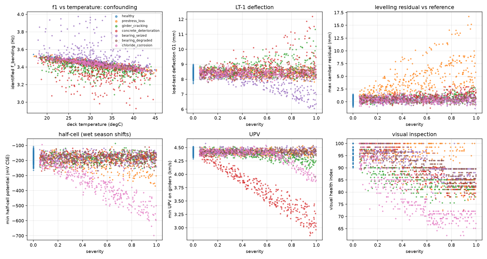
No single measurement sees every mechanism: prestress loss is invisible to vibration and to the load test and shows only in the levelling and gauge residuals; chloride corrosion shows only in half-cell potentials and visual inspection; a degraded bearing changes the frequency by about 0.2 % and is found essentially by the inspector.
Features were chosen for their physical meaning, and everything that defines “normal” is learnt from healthy training campaigns only (in practice the first years of monitoring of this bridge). Temperature compensation of the identified frequency: f1 = 3.4415 -0.00574(T − 30) Hz (-0.167 %/°C, R² = 0.81); the healthy scatter of f1 drops from 37.8 to 16.6 mHz. Load-test deflections and strains are compensated the same way and expressed as ratios to the healthy reference of each girder; half-cell potentials and resistivity are corrected for the wet season (-39 mV), rebound for carbonation hardening. The feature vector has five groups: vibration (Δf1–3 in %, f2/f1, aRMS, amax), load test, long-term monitoring (camber and strain residuals, bearing movement ratio), NDT summaries and visual summaries.
| Class | Δf1 % | Δf2 % | LT ratio max | LT ratio min | Camber res. max (mm) | Bearing ratio | UPV min | Half-cell min (mV) | Visual HI |
|---|---|---|---|---|---|---|---|---|---|
| healthy | -0.02 | -0.01 | 1.012 | 0.987 | 0.40 | 0.989 | 4.42 | -169 | 97.4 |
| prestress loss | -0.03 | -0.08 | 1.012 | 0.986 | 4.76 | 0.990 | 4.42 | -199 | 93.2 |
| girder cracking | -1.87 | -1.24 | 1.070 | 1.002 | 0.76 | 0.989 | 4.36 | -170 | 85.3 |
| concrete deterioration | -3.03 | -1.66 | 1.097 | 1.014 | 0.97 | 0.990 | 3.72 | -171 | 88.9 |
| bearing seized | 3.01 | 2.96 | 0.954 | 0.909 | 0.40 | 0.869 | 4.43 | -170 | 92.1 |
| bearing degraded | -0.10 | -0.20 | 1.014 | 0.988 | 0.43 | 0.989 | 4.42 | -172 | 91.4 |
| chloride corrosion | -0.03 | -0.04 | 1.011 | 0.985 | 0.38 | 0.989 | 4.34 | -340 | 78.2 |
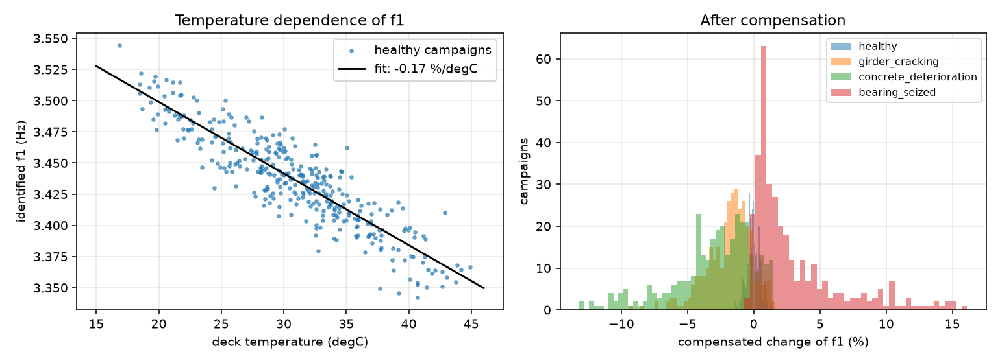
Data: 1666 training and 714 test campaigns (stratified split). Methods: anomaly detection (Mahalanobis distance with shrinkage covariance, threshold at the 99th percentile of out-of-fold healthy scores; isolation forest for comparison), classification of the mechanism (random forest), regression of severity and prestress loss (gradient boosting), localisation of the damaged girder, and k-means clustering without labels.
| Features | False alarms % | Detected % | AUC | prestress loss | girder cracking | concrete deterioration | bearing seized | bearing degraded | chloride corrosion |
|---|---|---|---|---|---|---|---|---|---|
| vibration | 1.0 | 36.4 | 0.726 | 3 | 61 | 72 | 72 | 11 | 1 |
| load_test | 1.0 | 29.9 | 0.654 | 1 | 52 | 70 | 55 | 2 | 0 |
| monitoring | 2.0 | 29.1 | 0.648 | 88 | 4 | 25 | 55 | 2 | 0 |
| ndt | 1.0 | 39.5 | 0.700 | 28 | 24 | 94 | 0 | 0 | 91 |
| all | 0.0 | 88.6 | 0.951 | 86 | 94 | 92 | 87 | 76 | 95 |
| isolation_forest_all | 0.0 | 47.7 | 0.874 |
Each source alone detects only the mechanisms it can physically see; all sources together detect 89 % of damaged campaigns at 0.0 % false alarms. Features that never change on the healthy bridge (a recorded flexural crack, a bearing defect, chloride at the end blocks) have almost zero healthy scatter, so a single such observation gives Mahalanobis distances of 104–106 against a threshold of 82: the size of the score means “never seen on this bridge when healthy”, not a proportionally worse condition.
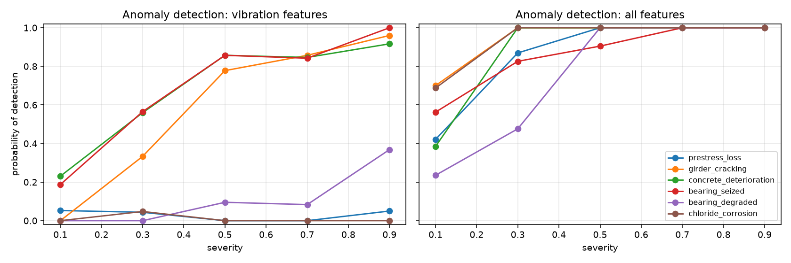
| Features | Macro-F1 | recall healthy | recall prestress loss | recall girder cracking | recall concrete deterioration | recall bearing seized | recall bearing degraded | recall chloride corrosion |
|---|---|---|---|---|---|---|---|---|
| vibration | 0.409 | 0.37 | 0.20 | 0.45 | 0.53 | 0.85 | 0.25 | 0.23 |
| load_test | 0.379 | 0.22 | 0.23 | 0.49 | 0.56 | 0.73 | 0.20 | 0.25 |
| monitoring | 0.409 | 0.22 | 0.90 | 0.20 | 0.33 | 0.71 | 0.21 | 0.26 |
| ndt | 0.509 | 0.25 | 0.40 | 0.39 | 0.90 | 0.37 | 0.22 | 0.94 |
| visual | 0.751 | 0.94 | 0.35 | 0.92 | 0.71 | 0.68 | 0.64 | 0.96 |
| all | 0.909 | 0.92 | 0.95 | 0.94 | 0.96 | 0.83 | 0.75 | 0.97 |
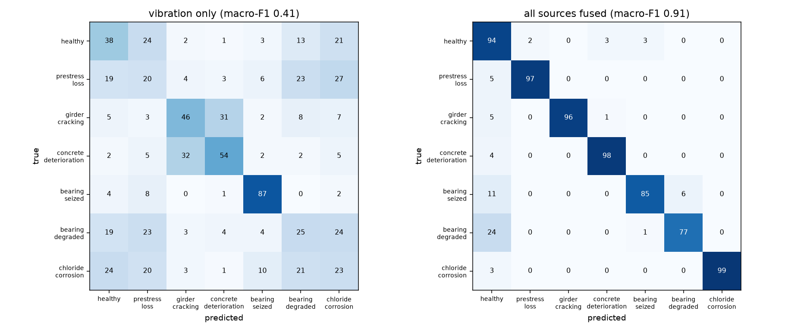
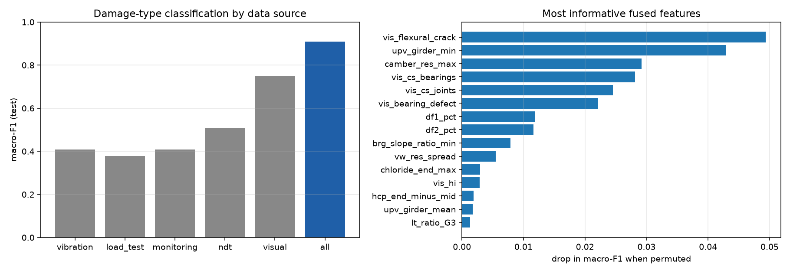
| Feature | Drop in macro-F1 | Physical meaning |
|---|---|---|
| vis_flexural_crack | 0.049 | inspector recorded transverse flexural cracks: the girder has cracked under load |
| upv_girder_min | 0.043 | lowest pulse velocity on the girders: cracked or poor-quality concrete |
| camber_res_max | 0.029 | sag beyond the long-term reference curve: loss of prestress (or stiffness under permanent load) |
| vis_cs_bearings | 0.028 | worst condition state given to a bearing |
| vis_cs_joints | 0.025 | worst condition state of the expansion joints (leaking seal = source of chloride) |
| vis_bearing_defect | 0.022 | inspector recorded a bearing defect |
| df1_pct | 0.012 | change of the 1st bending frequency after temperature compensation: global flexural stiffness / boundary restraint |
| df2_pct | 0.012 | change of the 1st torsion frequency: torsional stiffness, asymmetric damage, bearings |
| brg_slope_ratio_min | 0.008 | bearing movement per degC / alpha L: falls when a free bearing is restrained |
| vw_res_spread | 0.005 | difference between girders of the embedded-gauge strain residual: prestress lost in one girder only |
| Target | MAE | R² |
|---|---|---|
| prestress loss from monitoring | 3.599 | 0.62 |
| prestress loss from vibration | 7.420 | -0.37 |
| prestress loss from all | 3.205 | 0.70 |
| severity prestress loss | 0.119 | 0.70 |
| severity girder cracking | 0.084 | 0.88 |
| severity concrete deterioration | 0.041 | 0.96 |
| severity bearing seized | 0.069 | 0.89 |
| severity bearing degraded | 0.079 | 0.88 |
| severity chloride corrosion | 0.017 | 0.99 |
| Mechanism | Exact girder % | Within one girder % |
|---|---|---|
| prestress_loss | 75 | 99 |
| girder_cracking | 61 | 82 |
| concrete_deterioration | 61 | 89 |
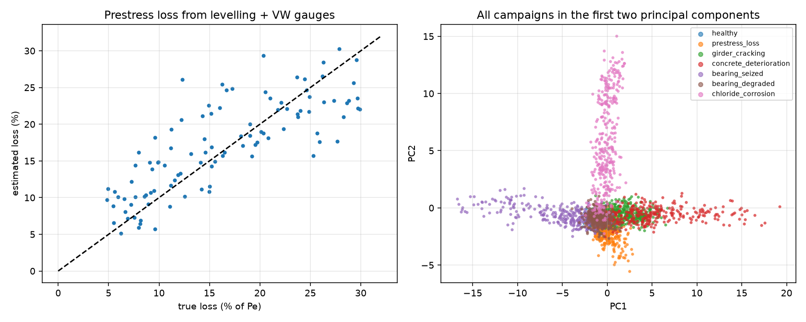
Clustering. k-means with seven clusters on all features reaches an adjusted Rand index of 0.25 with the true classes: mechanisms with a strong signature form their own clusters, while degraded bearings and early-stage damage merge with the healthy campaigns – without labels the data separate “clearly changed” from “normal”, not mechanisms.
The decision fuses visual inspection + NDT + structural response + vibration + AI/ML. Rules that need no model come first (visual CS4 on girders or bearings; CS3 on structural components or joints; half-cell below −350 mV; UPV below 3.75 km/s; camber more than 3 mm below the reference curve; bearing movement below 80 % of αL per °C), then the ML assessment (anomaly flag; most likely mechanism with probability ≥ 0.6 and estimated severity ≥ 0.4 → repair; structural mechanism with severity ≥ 0.8 or estimated prestress loss > 20 % → urgent). Every decision lists its reasons.
| Level | Decision | Re-inspection |
|---|---|---|
| 0 | routine monitoring | routine cycle |
| 1 | enhanced monitoring | targeted NDT within 3 months; monitoring review monthly |
| 2 | detailed investigation | investigation within 1 month |
| 3 | maintenance / repair | repair within 6 months; re-inspect after repair and at 1 year |
| 4 | urgent: restrict loading | immediately |
| Mechanism | Detailed investigation | Maintenance / repair |
|---|---|---|
| prestress_loss | drill-and-endoscope the ducts of the suspected girder at L/4, L/2, 3L/4; GPR / ultrasonic tomography for grout voids; load test with crack-opening gauges (decompression load) | vacuum re-grouting of voids; if the estimated loss exceeds ~10 % of Pe: external post-tensioning (deviators at the cross girders) designed for the lost force; reinstate monitoring targets |
| girder_cracking | crack mapping and crack gauges, UPV across cracks, load test; identify the overload (weigh-in-motion records) and check ULS with the reduced stiffness | epoxy injection of cracks wider than 0.2 mm; bonded CFRP on the soffit if the capacity check with the cracked section fails; enforce load limits |
| concrete_deterioration | cores (IS 516 Part 4) to calibrate rebound + UPV, petrography, extent mapping | remove and patch deteriorated concrete, surface protection; strength assessment with in-situ strength before deciding on strengthening |
| bearing_seized | close visual of the free bearings, measure movement vs. temperature over a day | clean debris, free or replace the bearing (jacks under the end cross girder, 4 per girder end) |
| bearing_degraded | measure bulging, splits and shear strain; Shore A hardness | replace the elastomeric bearing (jacking under the end cross girder at the design jacking points) |
| chloride_corrosion | chloride profiles and half-cell grid on the end blocks under the joint; open one anchorage pocket | replace the expansion-joint seal first (stop the source); patch repair of spalls; silane on end blocks; galvanic / impressed-current cathodic protection if potentials stay below -350 mV |
Is the logic safe and economical? On the 19 condition groups of the test set: 100 % of healthy campaigns stay on routine or enhanced monitoring and 0.0 % are sent to repair; 0.0 % of severe cases (s ≥ 0.6) are left on routine monitoring and 100 % are investigated or repaired.
| Condition | Severity | L0 | L1 | L2 | L3 | L4 |
|---|---|---|---|---|---|---|
| bearing degraded | low | 0.76 | 0.00 | 0.24 | 0.00 | 0.00 |
| bearing degraded | medium | 0.15 | 0.00 | 0.38 | 0.47 | 0.00 |
| bearing degraded | high | 0.00 | 0.00 | 0.00 | 0.37 | 0.63 |
| bearing seized | low | 0.37 | 0.15 | 0.48 | 0.00 | 0.00 |
| bearing seized | medium | 0.09 | 0.03 | 0.24 | 0.64 | 0.00 |
| bearing seized | high | 0.00 | 0.00 | 0.02 | 0.00 | 0.98 |
| chloride corrosion | low | 0.10 | 0.00 | 0.90 | 0.00 | 0.00 |
| chloride corrosion | medium | 0.00 | 0.00 | 0.24 | 0.76 | 0.00 |
| chloride corrosion | high | 0.00 | 0.00 | 0.00 | 0.00 | 1.00 |
| concrete deterioration | low | 0.35 | 0.00 | 0.65 | 0.00 | 0.00 |
| concrete deterioration | medium | 0.00 | 0.00 | 0.48 | 0.52 | 0.00 |
| concrete deterioration | high | 0.00 | 0.00 | 0.00 | 0.32 | 0.68 |
| girder cracking | low | 0.22 | 0.00 | 0.74 | 0.04 | 0.00 |
| girder cracking | medium | 0.00 | 0.00 | 0.48 | 0.24 | 0.28 |
| girder cracking | high | 0.00 | 0.00 | 0.00 | 0.00 | 1.00 |
| healthy | healthy | 1.00 | 0.00 | 0.00 | 0.00 | 0.00 |
| prestress loss | low | 0.41 | 0.03 | 0.44 | 0.12 | 0.00 |
| prestress loss | medium | 0.03 | 0.00 | 0.22 | 0.44 | 0.31 |
| prestress loss | high | 0.00 | 0.00 | 0.00 | 0.21 | 0.79 |
Example decision (most severe prestress-loss test campaign): urgent: restrict loading — reasons: visual CS4 on girders / bearings; visual CS3 on a structural component or joint; camber 5.8 mm below the reference curve; anomaly score 446182 > 82; ML: prestress_loss (p = 1.00), severity ~0.87; estimated prestress loss 22 %; action: restrict loading; drill-and-endoscope the ducts of the suspected girder at L/4, L/2, 3L/4; GPR / ultrasonic tomography for grout voids; load test with crack-opening gauges (decompression load); re-inspection: immediately.
The same twin was run year by year: the A1 joint starts leaking in year 8 (chloride corrosion of the end zones grows by 0.09 per year), an overload cracks girder G2 in year 18, and prestress loss from grout voids starts in G4 in year 23. A proactive owner (yearly monitoring + NDT + ML, repairs at level 3, or level 2 confirmed in two consecutive years) is compared with a reactive owner (visual inspection only; acts on CS4 or a visual health index below 60). Costs are relative units I assumed (repair cost growing with the square of the severity, monitoring 0.3 per year, investigation 0.5, load restriction 5 per year while the severity exceeds 0.8). Damage still unrepaired at year 30 is charged at its repair cost: it is deferred expenditure, not a saving.
| Owner | Repairs (year, true severity) | Worst severity | Spent | Unrepaired at year 30 | Total |
|---|---|---|---|---|---|
| proactive | chloride corrosion (year 10, s = 0.27); girder cracking (year 18, s = 0.45); prestress loss (year 27, s = 0.60) | 0.60 | 31.7 | 0.0 | 31.7 |
| reactive | chloride corrosion (year 14, s = 0.63); girder cracking (year 20, s = 0.45) | 0.96 | 20.8 | 30.6 | 51.4 |
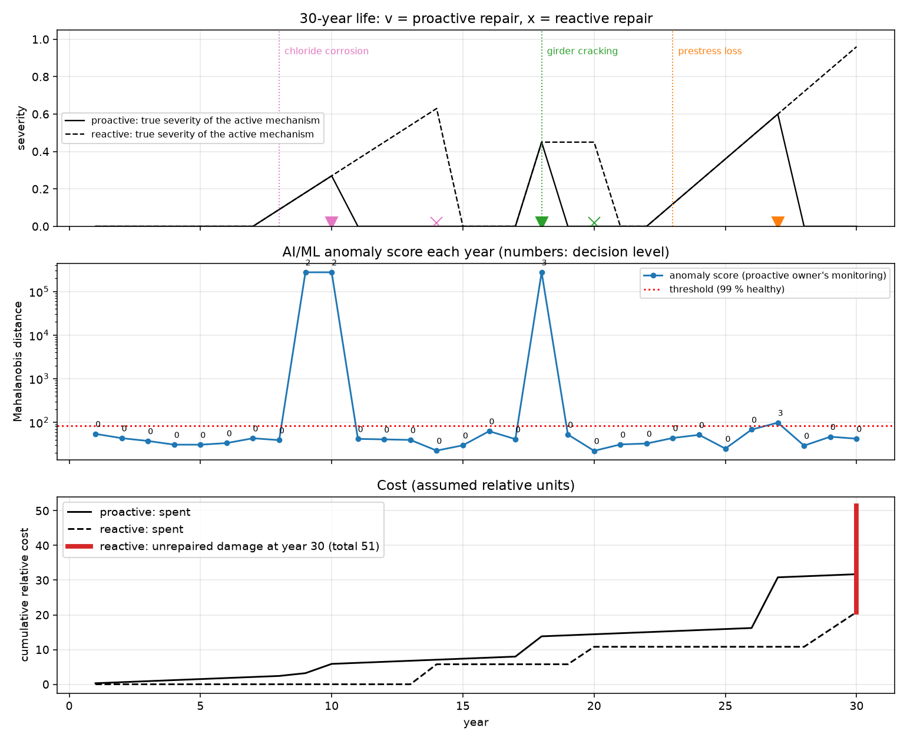
An AI assistant (Claude, Anthropic) was used, as permitted by §1.15, to formulate the problem, write the Python tools, generate the synthetic data and draft this report. The engineering choices (span, configuration, two-stage stressing, strand count, damage ranges) were discussed and decided step by step, and every computational result was checked independently:
tests/): single-beam results against PL/4, PL³/48EI and wL²/8;
grillage equilibrium; vehicle search; friction and wedge-slip against the closed form; ULS against the parabola–rectangle hand
formula; zero eigen-stress for uniform and linear temperature; mass of the twin against the dead loads; f1 against the beam
formula; FDD on a known SDOF signal; prestress-loss equivalent loads against ΔP·e; JS and Python inspection rules on
500+ cases; detector false-alarm rate on fresh data.Code and data: bridge/ (modules), run_step1_analysis.py … run_step7_maintenance.py,
outputs/ (JSON results, figures, datasets), inspection_app/, tests/, report/build_report.py.